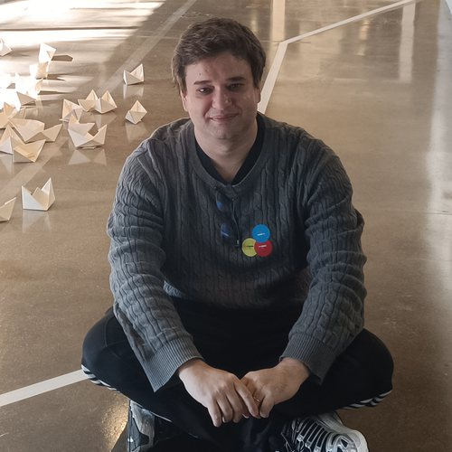
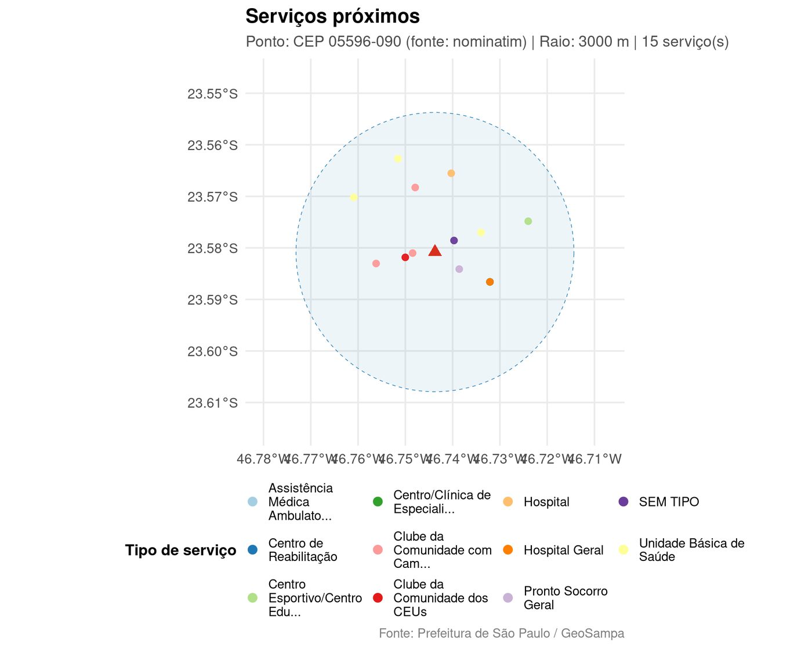
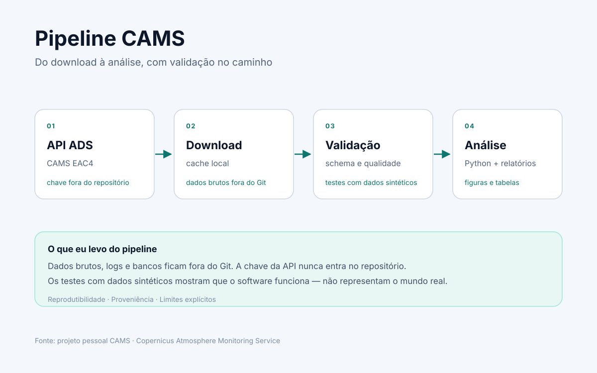
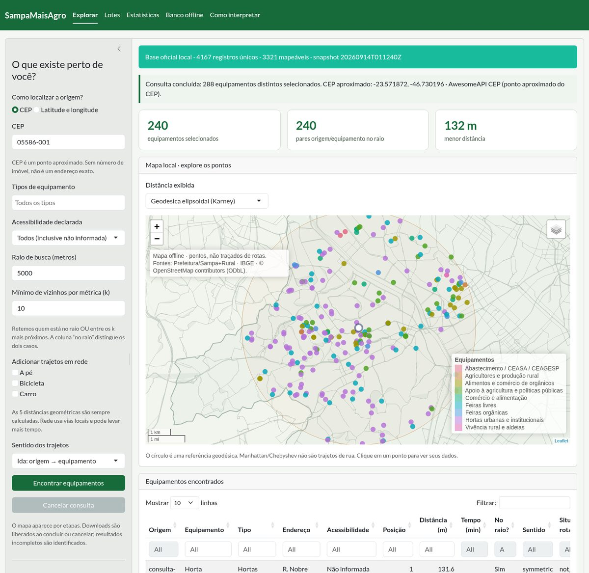
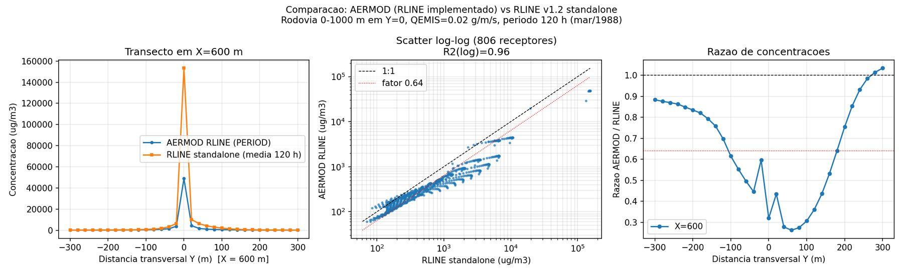

Estatística aplicada
Formulo a pergunta antes de escolher o teste, olho para as suposições e reporto incerteza. Gosto de modelos que ajudam a entender, não só a prever.
Mestrando em Estatística Aplicada à Saúde · FMUSP
Transformo dados em perguntas melhores — e perguntas melhores em análises que dá para entender.
Meteorologista pelo IAG-USP, mestrando em Estatística Aplicada à Saúde na FMUSP. Gosto de estatística, ciência de dados, R/Python e de explicar o caminho das pedras.

Mestrado em Estatística Aplicada à Saúde
Doenças renais crônicas · FMUSPSobre
Sou meteorologista formado pelo IAG-USP e atualmente faço mestrado em Estatística Aplicada à Saúde na Faculdade de Medicina da USP, no Departamento de Nefrologia. Trabalho com doenças renais crônicas — um tema que pede cuidado com os dados, com a interpretação e com as pessoas por trás dos números.
Minha trajetória começou na atmosfera e foi parar nos dados clínicos. No caminho, aprendi a gostar de estatística, ciência de dados, R/Python, machine learning e bancos de dados. Também descobri que gosto de ensinar: vários dos meus projetos têm guias que começam do zero, sem presumir que a pessoa já sabe programar.
Este site é uma pequena vitrine desse caminho. Aqui você encontra projetos de clima, meio ambiente, saúde e educação em dados — sempre com o código, o contexto e as limitações à vista.
O que eu faço
Meu trabalho fica no encontro entre método, contexto e comunicação. Dependendo do projeto, um desses lados pesa mais — mas os três nunca somem.
Formulo a pergunta antes de escolher o teste, olho para as suposições e reporto incerteza. Gosto de modelos que ajudam a entender, não só a prever.
Organizo, exploro e documento os dados antes de modelar. Depois comparo com uma base simples, valido e deixo o caminho reproduzível.
Gosto de deixar o trabalho fácil de rodar de novo: scripts claros, dados organizados, automação e documentação que começa do zero.
Saúde · Clima · Meio ambiente · Geoprocessamento
Como eu trabalho
Não é uma receita rígida. É a ordem que costumo seguir para reduzir atalhos e deixar claro o que os dados permitem — e o que não permitem — concluir.
Qual é a decisão ou a curiosidade por trás dos dados? O que seria uma resposta útil?
Conheço a unidade de cada linha, trato tipos, duplicatas e valores ausentes, e registro a origem dos dados.
Distribuições, relações e outliers contam a história. A EDA evita modelos bonitos para problemas mal entendidos.
Começo pelo modelo mais simples que responde à pergunta. Complexidade só entra se trouxer ganho claro.
Diagnóstico, análise de sensibilidade, intervalos de confiança e tamanho de efeito fazem parte do resultado.
Figuras legíveis, tabelas claras e limitações à vista. O que ficou de fora também é parte da resposta.
Duas regras que eu levo a sério: o teste é escolhido antes de olhar o resultado e “não significativo” não é prova de ausência de efeito.
Projetos
Uma seleção de projetos em R, Python e Fortran. Cada card mostra o que o projeto faz, as ferramentas e o que ele não pretende ser.

Você informa um CEP ou coordenada e o projeto mostra quais serviços públicos existem por perto — com mapas, tabelas e estatísticas espaciais. É uma expedição urbana feita em R, pensada para quem nunca mexeu com geoprocessamento.
Ver no GitHub
Pipeline para consultar, baixar, validar e organizar dados históricos da reanálise CAMS EAC4. O objetivo é deixar o caminho reproduzível — da chave da API ao conjunto de dados pronto para análise.
Ver no GitHub
Aplicação em R + Shiny para descobrir agricultura e alimentação perto de um CEP ou coordenada, sozinho ou em lote. Usa dados abertos do Sampa+Rural, funciona offline depois da preparação e foi validada com dados reais.
Ver no GitHub
Pipeline reproduzível para modelar dispersão de emissões rodoviárias com AERMET, AERMOD e RLINE. Além do código, o projeto tem um manual que começa do zero — para quem nunca rodou um modelo de dispersão.
Ver no GitHubServidor meteorológico que coleta dados GRIB e METAR da NOAA, gera mapas e estatísticas com Python, Bash e SQLite.
Ver no GitHubRede neural implementada em Python puro, sem frameworks, com guia didático do zero. Ótimo para ver o que acontece por baixo do capô.
Ver no GitHubLaboratório de códigos, estudos e experimentos em estatística, ciência de dados e programação.
Ver no GitHubPesquisa
Meu mestrado é em Estatística Aplicada à Saúde, na Faculdade de Medicina da USP, no Departamento de Nefrologia. Estudo como métodos estatísticos podem ajudar a fazer perguntas melhores sobre doenças renais crônicas.
Tenho interesse em dados longitudinais, valores ausentes, modelos de regressão e análise de sobrevivência — sempre com atenção ao contexto clínico e à interpretação dos resultados.
Nota de honestidade: pesquisa em andamento. Este site não apresenta resultados, conclusões ou publicações que ainda não existem.
Notas de dados
Três notas curtas sobre coisas que aparecem sempre quando a conversa é estatística — sem jargão desnecessário e sem prometer mais do que os dados entregam.
EDA (análise exploratória de dados) é o momento de conhecer o terreno: quantas linhas existem, o que cada linha representa, quais colunas têm valores ausentes, como as variáveis se distribuem e quais relações parecem suspeitas. Sem isso, é fácil escolher um modelo bonito para um problema mal entendido. Na prática, começo com perguntas simples: a base tem duplicatas? Há valores impossíveis? Os grupos são comparáveis? Outliers existem por erro ou fazem parte do fenômeno? A EDA não decide a análise sozinha, mas evita que a gente confunda pressa com método.
Um p-valor pequeno indica que os dados observados seriam improváveis se a hipótese nula fosse verdadeira — não a probabilidade de a hipótese ser verdadeira, nem o tamanho do efeito. Por isso, ao reportar um resultado, procuro mostrar também o tamanho do efeito e um intervalo de confiança. E lembro que “não significativo” não é prova de ausência de efeito: pode ser falta de precisão. A pergunta científica vem antes do teste; escolher o teste depois de ver o resultado é um atalho perigoso.
Dados sintéticos são úteis para testar um pipeline, reproduzir situações extremas e verificar se o código se comporta como esperado — sem depender de dados reais ou de uma API. Eles não servem como evidência sobre o mundo. Em projetos como o RLINE e o CAMS, os testes com dados sintéticos mostram que o software funciona; eles não representam uma cidade, uma população ou um estudo ambiental. A distinção parece pequena, mas é o que separa uma demonstração honesta de uma conclusão enganosa.
Trajetória
Base em matemática, física, estatística e computação. Foi onde comecei a transformar dados atmosféricos em análises.
Em andamento no Departamento de Nefrologia, com foco em doenças renais crônicas e métodos estatísticos para dados clínicos.
GeoSampa, CAMS, SampaMaisAgro, RLINE, server_met e ANN — um jeito de aprender coisas úteis e explicar o processo.
Fotos e desenhos
Retratos, formatura e desenhos. Clique em uma imagem para ampliar.
Contato
Quer trocar ideia sobre estatística, saúde, dados ambientais ou um projeto em R/Python? Me manda uma mensagem — respondo com prazer.